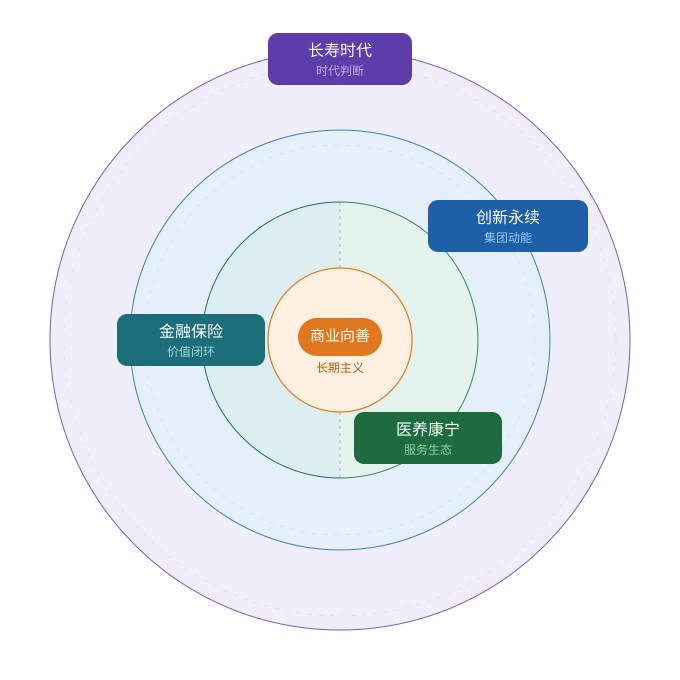

故事库总条数
0
当前筛选结果会同步显示在下方列表与图表中。
TaiKang Story Dashboard
用于汇报、检索和快速浏览故事资产。核心指标、筛选结果和图表会跟随数据源自动更新。
核心数据指标
故事库总条数
0
当前筛选结果会同步显示在下方列表与图表中。
距 30 周年还有
0
目标日期：2026 年 8 月 22 日
30 周年重点故事条数
0
兼容“是/否、Y/N、1/0”等标记方式。
检索
总领概念圈

图表
注：一个故事可对应多个标签，因此标签命中次数合计可能大于故事总数。
图表
图表
图表
注：一个故事可对应多个标签，因此标签命中次数合计可能大于故事总数。
图表
注：一个故事可对应多个标签，因此标签命中次数合计可能大于故事总数。
图表
结果
| 编号 | 故事标题 | 总领概念 | 业务板块 | 八大关系 | 主角角色 | 价值观标签 | 地点 |
|---|